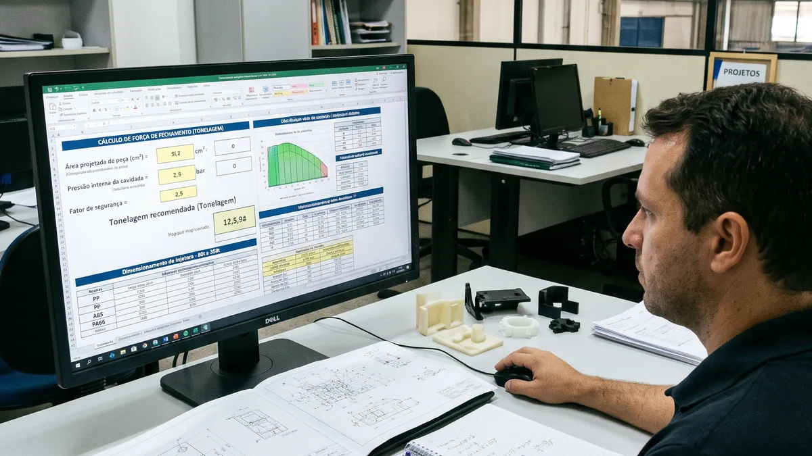

Projeto e Engenharia de Moldes
Como Calcular a Força de Fechamento e Tonelagem da Injetora com Precisão
Fórmula canônica pela área projetada e pressão específica na cavidade (PP, ABS, PA66 GF30, PC) para dimensionar a máquina injetora ideal entre 70% e 85% da capacidade.
Publicado em 14/04/2026 • Leitura Técnica B2B
Ler Estudo Completo